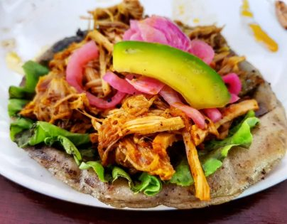

LOS PANUCHOS
El panucho es un platillo típico de la cocina de Yucatán. En Kanasín, los panuchos son hechos a base de masa de maíz, esta masa se mezcla con un poco de harina, agua y sal.
A partir de esta base, se realizan las tortillas en un comal caliente, "infladas" las tortillas, se le hace una pequeña abertura, son rellenadas de frijol colado y fritas en aceite o manteca, los hay de diferentes guisos y muy ricos, se le acompaña con lechuga, cebolla, tomate, aguacate, salsa picante y una bebida bien fría, ya sea horchata, jamaica, tamarindo ó cocacola ☻.